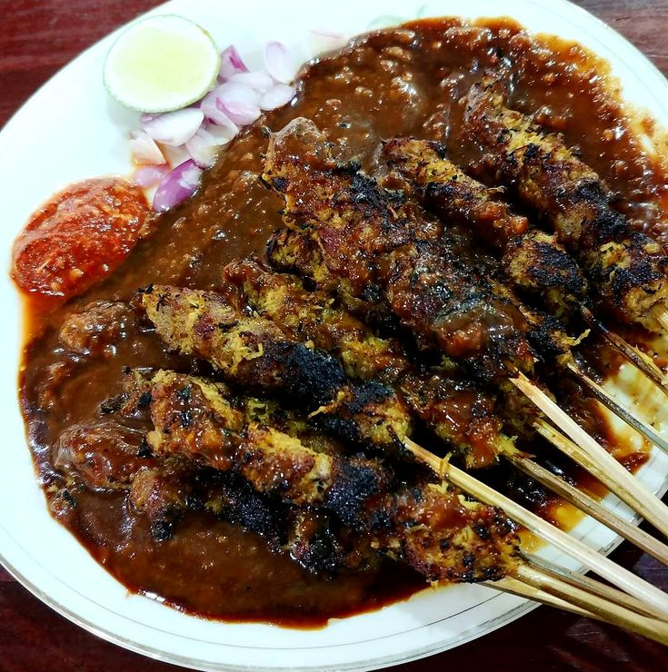
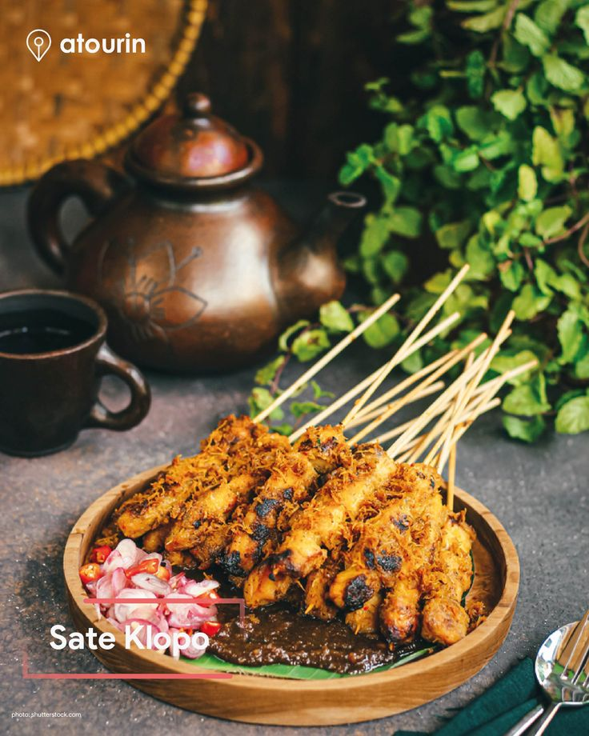

Mendengar istilah sate klopo, rupanya sajian satu ini warisan kuliner lokal asli Surabaya. Nama tersebut diambil karena sate ini dibakar dengan bumbu yang dicampur parutan klopo atau dalam bahasa Indonesia berarti kelapa.
Kelapa parut dinilai bisa menambah rasa gurih dalam sate klopo. Sate yang dibakar pun menjadi tidak mudah gosong. Beberapa pedagang juga menyajikan sate ini bersama kelapa parut sangrai atau srundeng yang ditaburkan di atasnya.

Parutan Kelapa
Parutan kelapa: Ciri khas utama dari sate ini adalah dagingnya yang direndam dengan bumbu khusus dan parutan kelapa, yang kemudian dipanggang. Parutan kelapa ini memberikan rasa gurih, manis, serta sedikit renyah setelah dibakar.

Penyajian
Sate klopo biasanya disajikan dengan lontong (nasi yang dikukus dalam daun pisang), serta siraman bumbu kacang yang kental. Sering kali ditaburi dengan bawang goreng dan disajikan dengan sambal untuk menambah sensasi pedas.